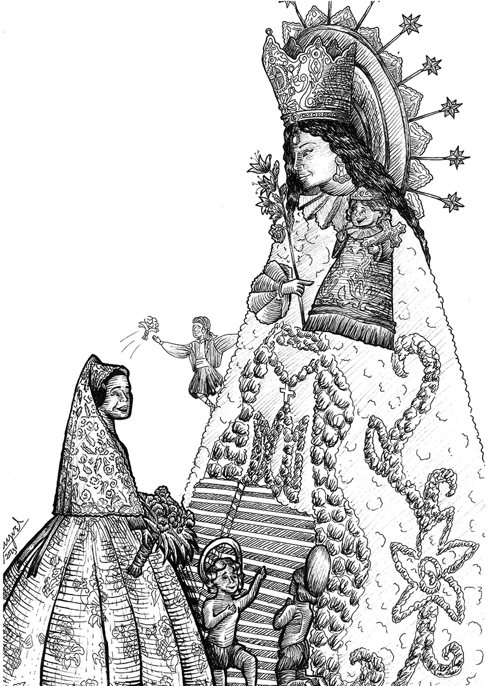

El taller de
Il·lustració a tinta, Falles i molta terreta. Sóc Miguel Ruiz, dibuixe València línia a línia i vull ser artista faller.
Fes clic a la zebra
Els ninots
Una sèrie de dotze il·lustracions sobre les Falles, fetes a mà amb retoladors calibrats sobre paper, més els encàrrecs per a les Falleres Majors i les il·lustracions solidàries de la DANA.
Com a les Falles, només un ninot pot ser indultat. Tria el teu.
Portades
Arrossega per a girar-la. Fes clic per a obrir-la.
El que s'ha fet viral
Va obrir @cebritart en 2019. En 2024 arribaren les primeres il·lustracions virals i, amb elles, els encàrrecs.
Disseny i marca
Identitats, packaging, editorial i una app. Sempre amb un peu en la tradició valenciana.
Falles de València 2026
Proposta d'imatge gràfica. El cartell principal forma una falla plantada amb les figures dels cartells secundaris, que en són els ninots: Cridà, Plantà, Ofrena, Mascletà, Nit del Foc i Cremà.
La capella
La Mare de Déu dels Desemparats i les il·lustracions religioses són de les que més vos agraden. Ací tenen la seua capella.

L'Ofrena
Cada 17 i 18 de març, milers de falleres vesteixen el mant de la Mare de Déu amb flors. Ací també: baixa i mira com s'omple.
La taula de dibuix
Una de les meues il·lustracions a tinta, per a pintar-la com vulgues. Tria un color i toca on el vols.
Animació
Els personatges també es mouen.

L'artista
Des de xicotet vull ser artista faller. Ara ho estic fent possible.
Fes el teu encàrrec
Envie a tota Espanya, en digital o en paper (l'enviament va a part). I si t'agrada alguna il·lustració per a tindre-la en làmina, pregunta'm.
- Emailmigueelruizzn@gmail.com
- Instagram@cebritart